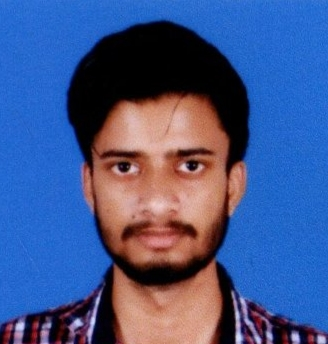

Well hello there, it's your favorite multi-hyphenate, A M Sanjeev! I'm a third-year computer science engineering student at Gurukula Kangri Deemed to be University Haridwar, and boy do I have my hands full!
Oh, and in case you were wondering what I look like, here's a picture of me:
I call this my 'serious face,' but it's really just my 'trying not to laugh' face.
When I'm not busy pretending to know what I'm doing as a teaching assistant at Pupilfirst or contributing technical content to Dev Academy, I'm juggling more titles than a circus performer. Founder and student head coordinator of Charabanc club? Check. Software tester at TestIO? Check. Global Digital Corps FieldOps Cadet? Check. Student Coordinator at Ek Bharat Shreshtha Bharat Club? Check. Jnanagni website developer? Check. Freelance web developer and content writer? Check. NSS Volunteer? Check. Phew, I'm out of breath just saying all that!
But don't be fooled by all those fancy titles, I'm just a simple guy with a love for web development, content writing, event planning, and leading teams. Oh, and let's not forget my love for puns - I've got more puns than lines of code!
Speaking of coding, I have a wide range of skills that I've honed over the years, including C, C++, Python, Java and MySQL. I'm also well-versed in Node.js, Object-Oriented Programming (OOP) just to name a few. In fact, my top skills include HTML, CSS, Javascript, Angular, Node.js, Ruby on Rails and Object-Oriented Programming (OOP), so you can rest assured that I know my way around the latest and greatest technologies.
When I'm not busy being a tech superhero, you can find me indulging in my other interests like exploring new technologies, learning new skills, and trying to convince myself that I have time for hobbies. But hey, life is short, and I want to do it all!
In addition to all that, I'm also the Student Head of the Magazine Editorial Team of FET's Quarterly Magazine, where I put my writing skills to the test. And if that's not enough, I've even started learning computer programming at Code in Place, a course offered by Stanford University! So, if you thought I was busy before, think again!
So, if you want to chat about coding, exchange puns, or just have a good laugh, hit me up at 9608685873, shoot me an email at amsanjeev28@gmail.com, or drop me a line at 206320028@gkv.ac.in.
I'm always down to connect with fellow techies and jokesters! and if you're in dire need of some A+ quality contents or codes, worry not, for I'm here to save the day! However, my exceptional skills don't come cheap, so brace yourselves to part with some of your hard-earned moolah. But trust me, it'll be worth every penny! Until next time, keep coding (and laughing) like a boss!